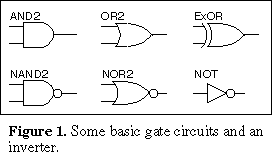
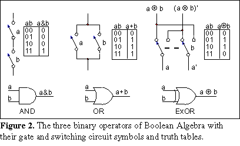
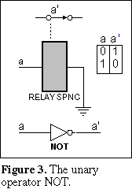
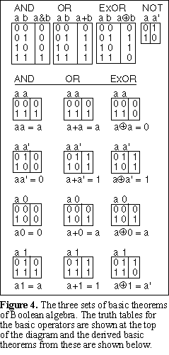
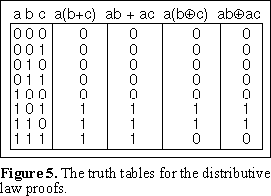
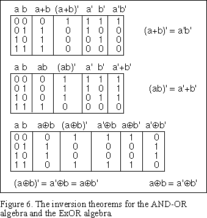
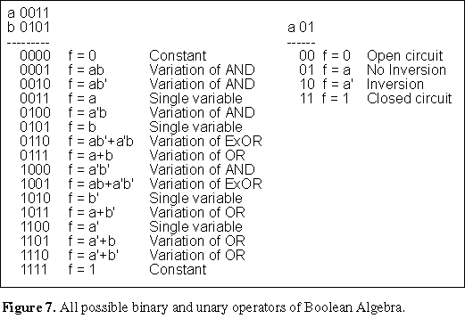

Boolean Algebra revisited - Page 1
An Introductory but fresh look at Boolean Algebra
Buy the new edition of the book (November 2006)
| You can now buy a printed copy of the book
"Introduction to Digital Circuit Theory" directly from this page. You will find
the book more convenient to read and better layed out, with improved diagrams and additional material. This book
contains comprehensive material on synchronous circuit design methods and techniques not
available on this web site. You can purchase and pay for the book through the secure
facilities of PayPal by pressing the button. See the end of the page for details. |
- Introduction
- Basic Assumptions
- The convention used for drawing switching circuits
- Some basic gate circuits
- The Boolean algebra operators
- The basic theorems of Boolean algebra
- Summary of the results for the basic theorems
- The Commutative, Associative and Distributive Laws
- The inverse of Boolean functions
- The even and odd properties of XOR algebra
- The basic operators of binary Boolean algebra
- Buy a Book
- Continued on Page 2
 Introduction
Introduction
George Boole made major contributions to the development of mathematical logic and published a book The Mathematical Analysis of Logic in 1847. The system of mathematics which he described in his book has become known as Boolean algebra. Boole was a self taught mathematician who discovered the power of mathematics early in life and became a leading figure in mathematical circles. Boolean algebra became a systematic method of dealing with symbolic logic and a much used method of arguing about the fundamentals of mathematics.
In 1938 Claude Shannon published an extract from his Masters thesis entitled: A Symbolic Analysis of Relay and Switching Circuits. Shannon made use of Boolean algebra to develop a system that described the logical relationships in switching circuits with simplification of these circuits as one objective. Essentially this provided an algebraic method of describing and manipulating switching circuits. In 1938 there were no logic gate circuits. Electromechanical relay circuits used by the Post Office and in control circuits were the main motivation for developing switching circuit theory.
The original application of Boolean algebra was for working with formal logic and the logical foundations of mathematics. Consequently a formal approach has developed for dealing with these applications. In this paper the purpose of using Boolean algebra is to provide techniques for working with digital circuits. The formal methods of presenting Boolean algebra are not suitable here. We will use the truth table method that Shannon described in his 1938 paper. The truth table method of proof, described later, will easily give us all the results we need.
Boolean algebra provides an algebraic method of working with all types of digital circuitry, including integrated circuit gates and circuits based on physical switch contacts. This allows us to replace physical arguments that can become complicated to think about when dealing with these circuits with precise application of theorems that will eliminate any concern about the correctness of the results. You will find that this is an advantageous way of working with digital circuits. Some of the theorems of Boolean algebra can appear simplistic at first glance but you will see that the results further into the subject lead to quite elegant and non intuitive results.
Consider purchasing a copy of my book. |
Basic assumptions
All systems of mathematics are based on a set of preliminary statements called postulates that do not depend on prior proof. To get the algebra started we will make the following statements: Boolean algebra has constants and variables. There are only two values for the constants and variables which we take to be 0 and 1. A constant has either the value 0 or 1 whilst a variable can take either value.Variables are usually represented by letters of the alphabet for describing the algebra and with mnemonics or abbreviations for real applications.
Boolean algebra is described as a finite algebra due to the finite number of values that are represented in the algebra. This is not the same thing as a binary number in which the individual digits of the number have only the values 0 or 1. In Boolean algebra there are only two values all together. This is the basic abstraction on which the algebra is based.
The two values 0 and 1 are regards as inverses of each other. There is only one possible inverse in a Boolean algebra that has only two values. The inverse of a constant or variable has the opposite value of the constant or variable itself. We will represent the inverse of a variable by placing a prime (i.e. straight single quote) immediately after the variable. We will sometimes refer to this prime as an exponent. Because there is only one possible inverse in this algebra the exponent has only two values. We can represent these two values by either using the prime if the inverse is intended or otherwise leave it out.
You might note that we could have a Boolean algebra with say three values which we might take as 0, 1 and 2. This would be called a ternary Boolean algebra. The complexity of Boolean algebras increases very rapidly when you increase the number of values it can have beyond two. We will stick to two valued (or binary) Boolean algebra.
In a gate circuit the logic levels in the circuit are described as a high or a low signal level. In an actual gate circuit the signals may not all be exactly at the same high or low level. Also when the signals are changing from one level to the other they have to pass through all the intermediate values. These details are ignored for the purpose of the algebra. In an actual circuit signal transitions are made very quickly, in the order of nanoseconds in today’s gate circuits. The minimum high signal level and maximum low signal level that are determined to give the circuit a reliable performance are specified for a given family of circuits. The algebra that we are developing will be concerned with the functional behaviour of digital circuits rather than the instantaneous values of signal levels in the circuits.
In the case of a circuit which contains mechanical switches and relays the logic levels for the circuit may be described as open circuit or closed circuit.
We can and will develop the algebra independently of the actual components that we intend to use in the implementation of the circuit. A logic 1 value will represent any of the expressions: 1, high, closed circuit or logic true. A logic 0 value will represent any of the expressions: 0, low, open circuit or logic false. The terms used for the logic values may be used interchangeably if called for by the context of a particular description. We will use the values 0 and 1 exclusively in the development of the algebra.
Whilst the assumptions made are completely adequate for dealing with the logic in the circuitry it is accepted that there are always delays through every part of a real circuit. These delays are both necessary and a source of problems in a real circuit. We will ignore them completely in this paper but they need to be considered carefully in the design procedures of synchronous circuits and in some other situations. Delays in an electrical circuit are a bit like the friction that exists in a mechanical system.
In a real digital circuit design, it is necessary to take into account the loading effects on a gate's output that drives many inputs to other gates. There are limitations on real gates specified by a manufacturer as fan in and fan out limits. Implementation details such as this will also be ignored in this paper. There will be more on the subject of postulates later in this paper.
Note that if you are drawing a circuit consisting of mechanical switches or relay contacts you should draw the circuit according to the following convention: A logic true contact is shown on the circuit as an open contact and a logic false contact is shown as a closed contact. The reason for this apparent inconsistency is that all switch contacts should be shown in their normally unenergised positions. So when a logic true contact is energised it becomes a closed contact. Also when a logic false contact is energised it becomes an open circuit. Failure to follow this convention will result in confusion when the circuit is analysed or when it is wired into an actual circuit.
Before we can start developing design methods for digital circuits we need to become acquainted with the theorems of Boolean algebra. First we will look at a few basic gate circuits.
 There are a number of basic gate circuits found in digital circuits. The most important of these are shown in Figure 1. The AND gate has the property that the output of the gate will be high only if both inputs are high. The output of the OR gate will be high if either or both inputs are high. The exclusive OR circuit labelled XOR (ExOR was previously used in these pages) has an output that is high if either but not both inputs are high together. The output of the NOT (or inverter) circuit provides the inverse of the signal on its input. The NAND and NOR circuits are the same as the AND and OR circuits but with an inverter on their outputs.
An inversion is shown as a small circle in these symbols. Whilst the inversion circle is shown on the output side of three of the symbols shown in Figure 1, symbols can be drawn with inversion symbols on the input sides of the symbols as well. Also each of the gate circuits are shown with two inputs but actual gate circuits can have as many inputs as are required within the physical limitations of the circuits.
When the gate circuits have only two inputs they can be regarded as binary operators for use in the algebra. Similarly the inverter can be regarded as a unary operator. There are three distinct binary operators for (binary) Boolean algebra and only one unary operator. The binary operators are the AND operator, the OR operator and the XOR operator. The unary operator is the inverter or NOT circuit. The justification for these statements is demonstrated later in this page. The Boolean algebra that we will develop will be based on these three binary operators and the unary or inverter operator.
The three distinct binary operators are shown in Figure 2. This figure shows the graphical symbols for the operators, the equivalent switching circuits and the truth tables for the operators.
The truth tables are lists showing the conditions under which the operator has logic true and false values. All possible variations of the input variables are shown on the left of the table (in binary numerical order) and the resulting output from the operator is shown on the right of the table. For the AND operator, the truth table shows that the output of the AND gate is high only when both inputs of the gate are high or that the output of the switching circuit is a closed circuit only when both switches in the circuit are closed. The truth tables follow the statements of the behaviour of these operators.
For the OR operator, the truth table shows that the output of the OR gate is high when either or both inputs of the gate are high or that the output of the switching circuit is a closed circuit when either or both switches in the circuit are closed.
For the XOR operator, the truth table shows that the output of the XOR gate is high when one or the other but not both inputs of the XOR gate are high. The switch circuit version of the XOR shown in Figure 2 shows how the XOR function can be cascaded in a switching circuit. Both the logic true and logic false signals are carried through a chain of these circuits since a relay would otherwise be required to produce the inverse of a signal. The switch circuit can be constructed with a double pole double throw switch.
The inverse operator is shown in Figure 3. The use of a relay is shown for the switch circuit inverter. A Boolean expression consisting of variables and operators is known as a Boolean function.
The symbols used for the operators in Boolean functions and formulas are: a dot (or frequently an &) for the AND operator. The OR symbol is usually a + (arithmetic plus symbol). The XOR symbol is a . This symbol is sometimes referred to as a modulo-2 or mod-2 sum symbol. If the variables are represented by single letters the AND symbol between the variables is usually omitted. Therefore the absence of an operator symbol between variables is taken to be an AND operator. A logic false variable or function is represented by a prime after the variable or function.
The AND function has been compared by early authors of this subject with the arithmetic multiplication operation for the digits 0 and 1, which it matches exactly. The OR operation for the digits 0 and 1 has been compared with the arithmetic SUM operation. The only difference for this case is that the arithmetic 1 + 1 equals 2, whereas the Boolean OR for 1 + 1 equals 1. Therefore it is common practice to refer to a Boolean function of AND operators as a product term or just a term and a Boolean function of OR operators as a sum. The XOR operator can be compared with the remainder after dividing the arithmetic sum by 2. Hence the terminology mod-2 for this operator.
If the product terms are separated by OR operators, the function is referred to as a Sum-Of-Products (or SOP). A function consisting of groups of OR operators separated by AND operators is referred to as a POS. A Boolean function of AND operators separated by XOR operators is often referred to as an Exclusive-OR-Sum-Of-Products (or ESOP).
There is a group of four basic theorems for each of the binary operators that are constructed by applying the following pairs of signals to the two inputs of each of the operators: Applying the same signal to both inputs, applying a signal and its inverse to the two inputs, applying a signal and a logic 0 to the two inputs and applying a signal and a logic 1 to the two inputs. The complete procedure for carrying this out is shown in Figure 4.
In the truth table method of proof we simply apply the values in the truth tables of the operators to each of the theorems. This method of proof makes use of the fact that because of the finite number of values of the variables involved we can quickly fill in all possibilities and find the results directly. This method of proof is completely adequate to derive all the results we need. However, after deriving some of the results in this way we will be able to derive additional results by application of the theorems already derived.
In Figure 4, the four basic theorems for each of the three binary operators have been found. The operators themselves are shown at the top of Figure 4 and the values from these operators have been filled in on the right hand sides of each of the theorem truth tables. The results for each of these theorems has been written down under the truth table for each theorem.
Many of these theorems are obvious on physical grounds if you consider the corresponding switch circuit. For example placing two contacts of the same switch in series is no different to having a single contact of the switch. Placing a true and false contact from the same switch in series can never produce a closed circuit, since when the true contact is closed the false contact will be open and visa versa. However, we have not used physical arguments to derive any of the theorems. We used the truth tables of the basic operators themselves in every case.
The operators themselves are an essential part of the postulates of the algebra.
| AND | OR | XOR | ||
| aa = a | a+a = a | a a = 0 | ||
| aa’ = 0 | a+a’ = 1 | a a’ = 1 | ||
| a0 = 0 | a+0 = a | a 0 = a | ||
| a1 = a | a+1 = 1 | a 1 = a’ | ||
From the truth table for the XOR operator you can see that the XOR operator is related to the AND and OR operators by: a b = ab’+a’b. Using this relationship it is easy to derive all the basic theorems for the XOR operator from the theorems for the AND and OR operators.
Just a reminder that you can purchase a copy of my
book. |
In order to enable us to manipulate Boolean equations and functions we need to establish three so-called laws. The commutative law refers to the order in which the variables or terms are arranged in a formula. You can see from Figure 4 that we could have reversed the order in which the variables were arranged for each theorem without changing the results of the basic theorems developed there. Consequently we can write the commutative law for each of the operators as follows:
| Commutative law: | ab = ba | a+b = b+a | a b = b a |
Each of the remaining two laws refers to the use of parenthesis in Boolean equations. The associative law refers to the rearrangements of the parenthesis in an equation. It can be stated as follows:
Associative law:
| AND | (ab)c = a(bc) = abc |
| OR | (a+b)+c = a+(b+c) = a+b+c |
| XOR | (a b) c = a (b c) = a b c |
You can derive this result by drawing truth tables. You can do the proof yourself, it follows a similar procedure to that shown in Figure 5 for the distributive laws. The distributive law shows us how to take a variable or function into or out of parenthesis. These laws allow us to work with or manipulate functions of Boolean variables.
In Figure 5 all possible variations of three variables is shown in the left hand column in binary numerical order. Each of the other columns are filled in by evaluating the expression at the top of the column using the values in the first column. To do the evaluation we evaluate inside parenthesis first, then we evaluate product terms next and sums last. We do each evaluation by using the values given in the truth tables for the basic operators. Note that we are taking the absence of an operator shown between two variables or constants to be an AND operator.For example:
If a=1 and b=c=0, then: a(b+c) = 1(0+0) = 10 = 0
If a=b=1 and c=0, then: a(b+c) = 1(1+0) = 11 = 1
This gives us two of the values to fill in the table. We continue to fill in the whole table in this way. If we do the same for the XOR case using the same values for the variables then:
If a=1 and b=c=0, then: a(b c) = 1(0 0) = 10 = 0
If a=b=1 and c=0, then: a(b c) = 1(1 0) = 11 = 1
We evaluate all the entries for the table using the same procedure. The result is that:
| Distributive law: | a(b+c) = ab + ac | a(b c) = ab ac |
There is also a distributive law for the POS case with the AND and OR operators. This is:
| POS Distributive law: | (a+b)(a+c) = a+bc |
We can derive this result using the distributive law already established.
(a+b)(a+c) |
= a(a+b) + c(a+b) | using the distributive law |
| = aa + ab + ca + cb | using the distributive law again | |
| = a(1 + b + c) + bc | aa = a, distributive law, cb = bc | |
| = a + bc | (1 + anything) = 1, a1 = a |
This shows the result given above. There is no similar result that is useful for an XOR case. However, see the added note on page 2 to see how this fits in with the overall picture.
| Question: Design a circuit that will indicate if exactly one of several
switches (or signals) is turned on? Answer in the book. |
A truth table can be drawn up for any given function of Boolean variables. Each term in the table has a 0 or 1 value. The inverse of a function is found by inverting all of the values for the terms in the table. We effectively plot the 0s instead of the 1s. This results from the property of the inverse operator.
In this section we will find the theorems for deriving the inverse of any given Boolean function.
A Boolean function can have any of the three binary operators as part of it. However, it will be seen that two independent algebras can be constructed out of the three binary operators. These algebras are called the inclusive-OR algebra when AND, OR and inverters are the operators for the algebra and exclusive-OR algebra when XOR operators replace the OR operators. The two algebras have distinct inversion theorems.
The inversion theorems are derived in Figure 6. The theorem for the inclusive OR algebra is generalised in the following statement: The inverse of any Boolean function of the inclusive-OR algebra can be found by replacing all occurrences of AND operators with OR operators, replacing all OR operators with AND operators, priming all unprimed variables and unpriming all primed variables. This result for the inclusive-OR algebra is called DeMorgan’s theorem after a contemporary mathematician of George Boole who formulated it.
The last truth table in Figure 6 shows two inversion theorems for the exclusive-OR algebra. The second of these theorems also follows from the first by double inversion. DeMorgan’s theorem’s are not applicable to the XOR algebra. In addition to these two inversion theorems for the XOR operator the basic theorem a 1=a’ also relates to inversion. The inversion theorems for the XOR operator are:
| (a b)’ = a’ b = a b’ | |
| a b = a’ b’ | |
| a 1 = a’ |
If a given term appears twice in a function connected by XOR operators, then the two terms will cancel out. This results directly from the basic theorems of the XOR operator: x x = 0 and y 0 = y. Consequently the following statements hold for the XOR algebra:
| x x. . . x = 0 | for an even number of x | |
| x x. . . x = x | for an odd number of x | |
| x y z. . . = 0 | if an even number of the variables x,y,z... have the value 1 | |
| x y z. . . = 1 | if an odd number of the variables x,y,z... have the value 1 |
An example of the use of this property is to use XOR operators in a parity generator.
Next we will review some considerations illustrated in Figure 7. This section has been left to this point because we need the inversion theorems for part of the description.
Figure 7 has been drawn up to clearly identify the distinctly different binary operators of Boolean algebra. There are 16 variations of the four values of the two variables to get all the possible operators. The equation represented by each variation has been written in the middle column for each case in the list. You can consider the binary numbers in the left hand column to be truth tables on their sides for the expressions to their right.
Figure 7 shows that there are two cases of constants in the table and four cases of single variables. These are six degenerate cases. There are ten cases of actual binary operators. Of these ten cases there are four variations of AND functions, four variations of OR functions and two variations of XOR functions. The variations are due to the values of the exponents of the variables. There are four variations of the exponents of two variables which gives the four variations of the AND and OR cases.
There are only two variations of the XOR functions. In the general case of a Boolean function of two or more variables there are always only two XOR functions in which all of the variables appear singly in the terms of the function. For example consider the following function of three variables:
| f = a b c | f’ = 1 a b c |
|
Out of the ten cases of binary operators there are therefore just three distinctly different binary operators of Boolean algebra, the AND, OR and XOR operators. The NAND (1110) and NOR (1000) operators are seen to be included in the variations of the OR and the AND operators respectively. A method of dealing with NAND and NOR gates will be described shortly.
All Boolean functions have an inverse function. If f is a Boolean function, then 1 f is the inverse of the function. The two XOR functions are inverses of each other and the AND and OR functions in Figure 7 are inverses of each other in pairs, a circumstance that leads to duality in the Inclusive OR algebra.
This paper is continued on the next page:
Buy the second edition of the book entitled:
"Introduction to Digital Circuit Theory" (ISBN: 978-0-9581894-1-5). The book is
in the form of a monograph with comb binding, card back and clear cover in A4 format. The
current revision includes a number of inadvertent error corrections. The single copy price
is $39.95 (Australian dollars), which includes all currency fees and airmail charges if
purchased with the Buy Now link. PayPal will carry out the conversion of your
currency to Australian currency in a secure transaction and email me your order. Please
follow this link |
Bystanders page OR Top for navigation menu OR Boolean Algebra - Page 2:
(Copyright) David N. Warren-Smith, CPENG
Digital Logic Systems, South Australia
dwsmith@senet.com.auModifications: 22 January 2002, 16 January 2003. Currently, Nov 2006, any modifications or improvements have been made to my book, rather than to this page.